Week 5¶
The problem in statistical mechanics is that we can only gain partial information of the system, thus only partial results are obtained. However we know that in equilibrium, all possible states appear with an equal probability. Recall that states means points in phase space. We use hydrodynamics to represent the phase space distribution but this can not determine if the phase space points are change or not. The only thing this density show us the the aparant density doesn’t change. So it seems that we don’t need to know the exact position of a phase space point. We can rely on average values.
The system is like a black box. Even we know all the quantities, we still have no idea about the exact state of the system.
Ensemble¶
Gibbs’ idea of ensemble is to create a lot of copies of the system with the same thermodynamics quantities.
The question is where to put them? In different time or in different space?
We can create a uge amount copies of the system and imagine that they are at different place. Then we have all the possible states of the system.
We can also wait infinite long time and all possible states will occur, at least for some system, which is called ergodic. Ergodic means the system can visit all possible states many times during a long time. This is rather a hypothesis than a theorem.
The problem is, not all systems are ergodic. For such systems, of course, we can only do the ensemble average.
Note
Cons
- Not possible to prove ensemble average is the same as time average. In fact some systems don’t obey this rule.
- Not possible to visit all possible states on constant energy surface in finite time.
- Even complicated systems can exhibit almost exactly periodic behavior, one example of this is FPU experiment .
- Even the system is ergodic, how can we make sure each state will occur with the same probability.
Here is an example of non ergodic system:

This is a box of absolutely smooth with balls collide with walls perpendicularly. Then this system can stay on some discrete points with same values of momentum components.
Another image from Wikipedia :
{kind=link}

Note
Pros
- Poincaré recurrence theorem proves that at least some systems will come back to a state that is very close the the initial state after a long but finite time.
- Systems are often chaotic so it’s not really possible to have pictures like the first one in Cons.
We already have Liouville density evolution
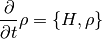
Von Neumann equation
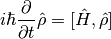
In all, they can be written as
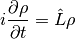
where 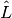 is the Liouville operator.
We have mentioned that ensembles have the same thermodynamic quantities. In the language of math,
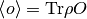
All we care about is the left hand side. So as long as  is not changed, we can stir the system as crazy as we can and keep the system the same.
is not changed, we can stir the system as crazy as we can and keep the system the same.
Hint
Only one trace in phase space is true. How can we use ensemble to calculate the real observables?
Actually, what we calculated is not the real observable. What we calculated is the ensemble average. Since we are dealing with equilibrium, we need the time average because for equilibrium system, time average is the desired result. (Fluctuations? yes but later.) As we discussed previously, for ergodic systems, ensemble average is the same as time average.
Equilibrium¶
What does equilibrium mean exactly?

or equivalently,
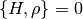
Obviously, one possible solution is
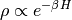
Ensembles, Systems¶
| Systems | Ensembles | Geometry in Phase space | Key Variables |
|---|---|---|---|
| Isolated | Microcanonical | Shell; 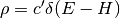 | Energy  |
| Weak interacting | Canonical | ||
| Exchange particles | Grand canonical |
Isolated System - Micro-canonical Ensemble¶
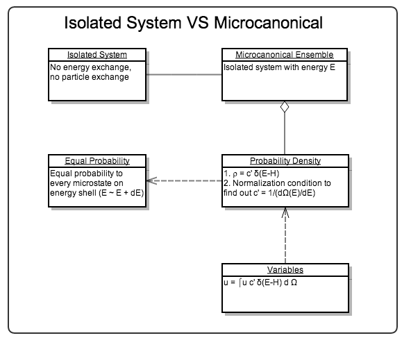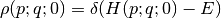
That is the system stays on the energy shell in phase space. Also we have for equilibrium system,
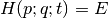
Hint
Is it true that ensemble average is equal to the actual value of the system?
Not for all classical systems. (But for ALL quantum systems? Not sure.)
Ergodic Hypothesis Revisited¶
For ergodic systems, ensemble average is equal to time average.
Important
How about state of the system moving with changing speed on the shell? Then how can we say the system is ergodic and use ensemble average as time average?
Micro canonical ensembles are for isolated systems.
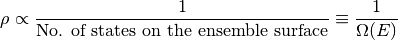
To calculate the entropy
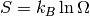
Canonical Ensemble¶
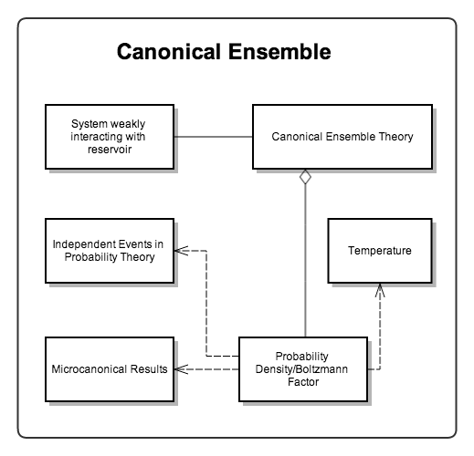For a system weakly interacting with a heat bath, total energy of the system is
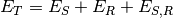
where the interacting energy is very small compared to 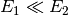. So we can drop this interaction energy term,
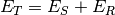
A simple and intuitive derivation of the probability density is to use the theory of independent events.
- 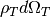: probability of states in phase space volume
 ;
; - 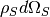: probability of states in phase space volume 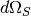;
- 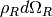: probability of states in phase space volume 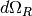;
We assumed weak interactions between system and reservoir, so (approximately) the probability in system phase space and in reservoir phase space are independent of each other,
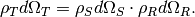
Since there is no particle exchange between the two systems, overall phase space volume is the system phase space volume multiplied by reservoir phase space volume,
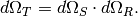
Obviously we can get the relation between the three probability densities.
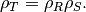
Take the logarithm,
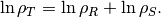
Key: :math:`rho` is a function of energy :math:`E`. AND both :math:`rho` and energy are extensive. The only possible form of :math:`ln rho` is linear.
Finally we reach the destination,
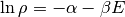
i.e.,
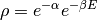
which is called canonical distribution.
Warning
This is not an rigorous derivation. Read R.K. Su’s book for a more detailed and rigorous derivation.
Grand Canonical Ensemble¶
Systems with changing particle number are described by grand canonical ensemble.
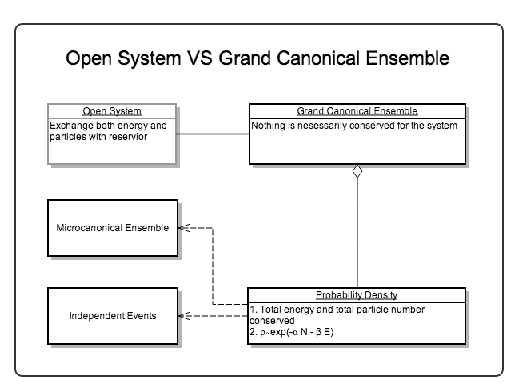Note that the partition function of grand canonical ensemble really is
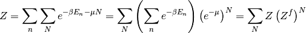
Identical Particles¶
If a system consists of N indentical particles, for any state  particles in particle state i, we have the energy of the system on state
particles in particle state i, we have the energy of the system on state  is
is
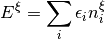
where the summation is over all possible states of particles.
The value of energy is given by ensemble value
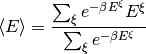
is the ensemble summation.
Hint
How to calculate the average number of particles on a particle state i?
{kind=link}